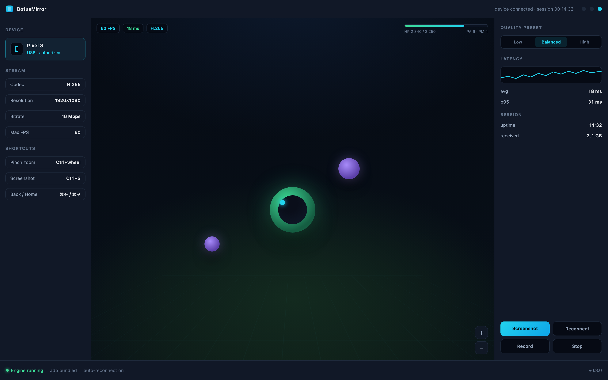

DofusMirror mirrors your Android phone to Windows, macOS or Linux over USB — full mouse and keyboard control, near-zero latency, no root required.
Latest build · see releases for changelogs

Built on a hardened scrcpy-fork Android engine with a modern Electron + Node.js client.
Hardware-accelerated H.264 / H.265 decoding via WebCodecs, with quality presets and auto-reconnect on drop.
Mouse-to-touch injection, scroll, Ctrl+wheel pinch-to-zoom, back / home / recents, keyboard text entry and clipboard sync.
No accounts, no cloud, no telemetry. Bundled adb finds your phone automatically — fully self-contained.
Capture PNG screenshots with one shortcut, saved straight to your phone's Pictures/DofusMirror folder.
USB debugging is the only requirement. The engine runs as a standard debug-bridge service and cleans up after itself.
Native builds for Windows, macOS and Linux from one codebase — same experience everywhere.
From download to playing on your monitor in under two minutes.
Developer options on your Android phone — that's the only setup required on the device.
DofusMirror detects the device, pushes the engine and opens the mirror window automatically.
Log into Dofus Touch with your mouse and keyboard. Mirror in a window, on your second monitor, wherever.
scrcpy is great. DofusMirror is built specifically for Dofus Touch players.
| DofusMirror | Raw scrcpy | |
|---|---|---|
| Purpose-built for Dofus Touch | Yes | No |
| Quality presets & auto-reconnect | Yes | CLI flags only |
| Screenshots to phone gallery | Yes | No |
| Gaming-friendly UI, zero terminal | Yes | No |
| Free & open source | Yes | Yes |
| No root / no modified game | Yes | Yes |
Short answers, straight up.
Yes — free and open source under the MIT license. The bundled Android engine is Apache-2.0.
No. USB debugging is enough. Nothing is modified on your phone or in the game client.
DofusMirror only reads the screen and injects standard touch input on your own device. It doesn't touch game memory, files, or network traffic.
On Android 15+, the OS blocks system audio capture (REMOTE_SUBMIX returns silence). A native audio path through the engine's N-API addon is on the roadmap.
USB is recommended for lowest latency and best stability. Wireless works anywhere adb over TCP/IP works.
All three, with bundled adb per platform — no separate SDK install needed.
Grab the latest build, plug in your phone, and mirror your first session tonight.
Free forever · MIT licensed · View source on GitHub